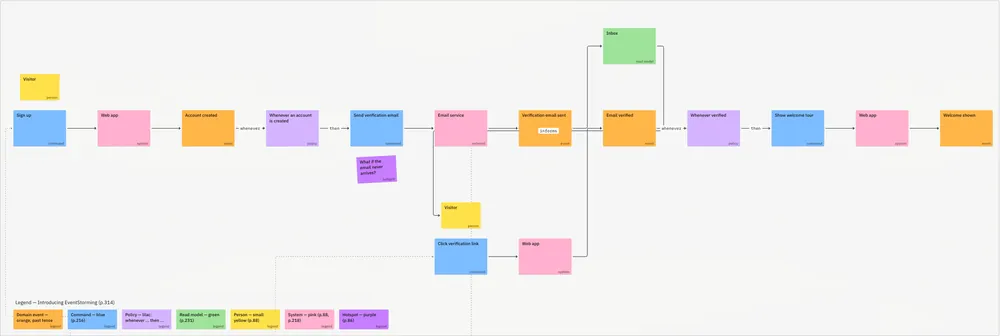
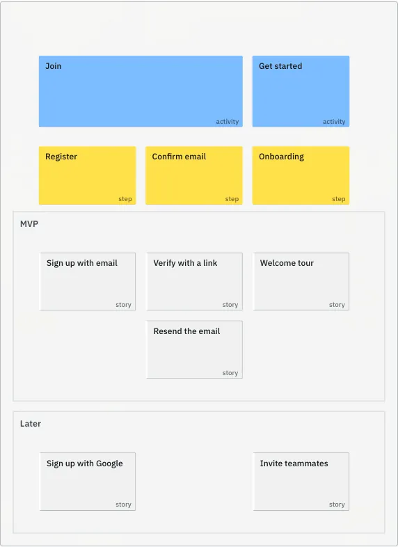
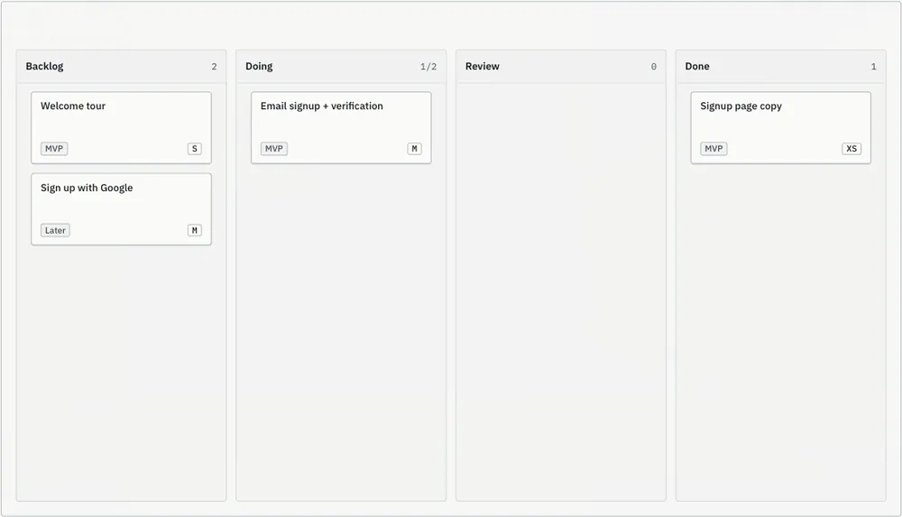
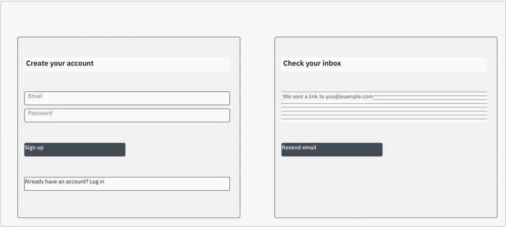
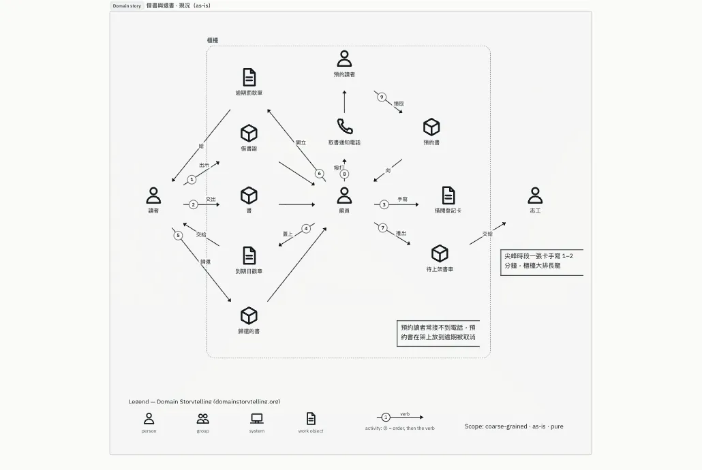
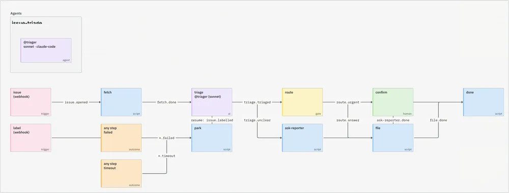
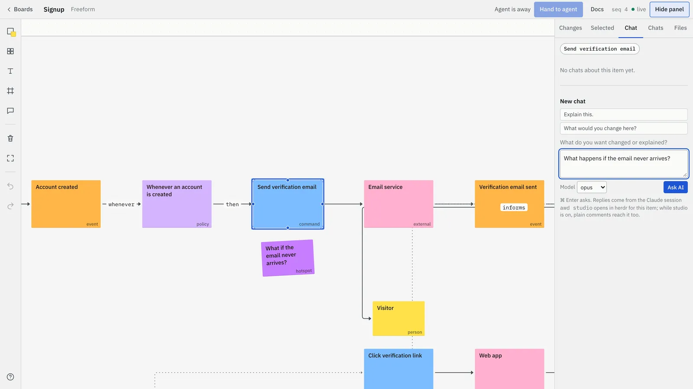
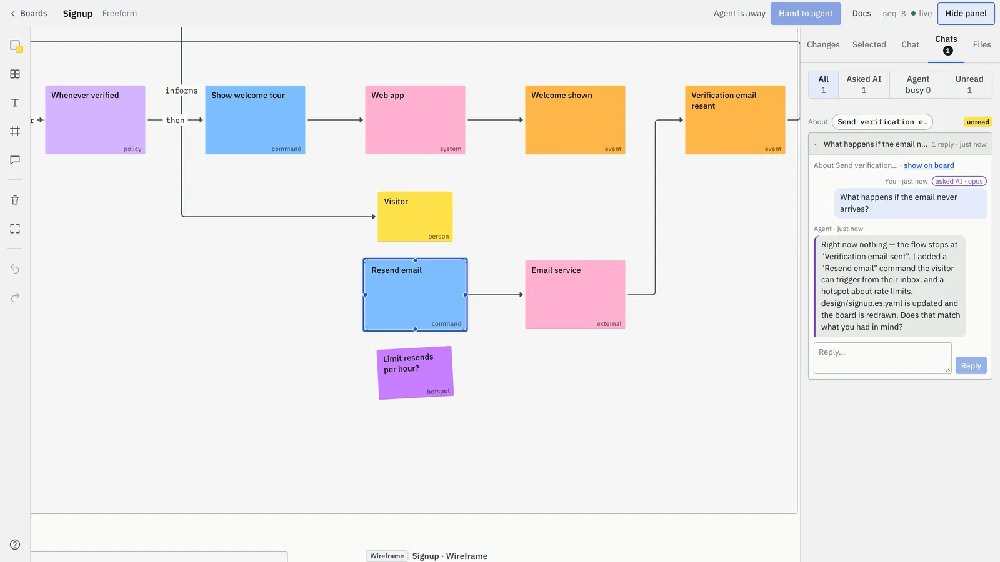
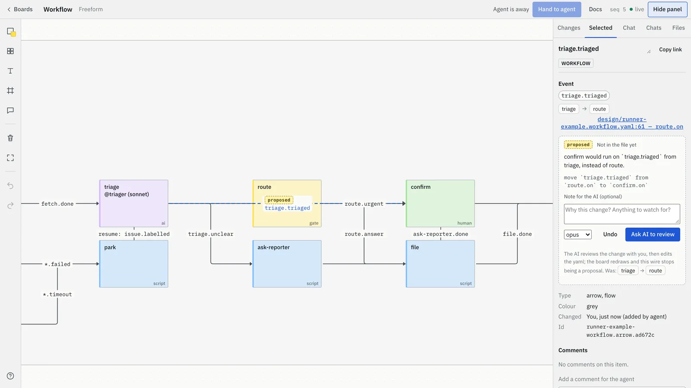
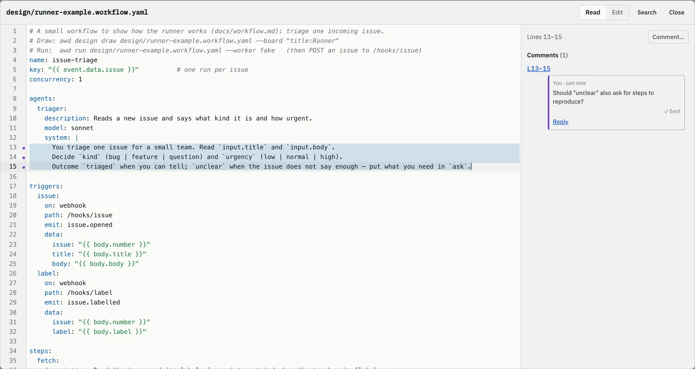

EventStorming
一步步討論系統怎麼運作。Event、command、policy 和 hotspot 依時間由左到右排列，照書上的做法。
design/<name>.es.yaml
開源 · 支援 Claude Code、Codex 和任何 MCP agent
檔案是唯一的真相。Agent 修改，你下指導棋。指著一個方塊、一條線或檔案裡的幾行直接問。回答會出現在同一個對話串，repo 裡的設計檔只有在你同意後才會改。
面對 agent 吐出的一大段文字，你沒辦法指著某一句說「就是這裡」。在 board 上可以：選一個方塊、幾行檔案，或整張圖，直接問。
Board 是從 repo 裡的 design/*.yaml 畫出來的，每次修改都是一般的 git diff。
你提問、做決定；agent 負責動手、lint 檔案、重畫 board。
拖動的線、改過的某幾行，都要等你同意。Canvas 本身從不寫檔。
重畫時，你排好的位置不會被打亂，你刪掉的東西也不會跑回來。
design/*.yaml ──畫出──▶ board ──你留言──▶ agent
▲ │
└────────────── 修改檔案 ◀─────────────────┘每張圖是 design/ 裡的一個檔案。多張圖可以放在同一張 board，用 trace 彼此連結：這張 story 來自那個 command，這張卡片來自那張 story。

一步步討論系統怎麼運作。Event、command、policy 和 hotspot 依時間由左到右排列，照書上的做法。
design/<name>.es.yaml

決定先做什麼。Agent 可以從 EventStorming 提出 story 候選，release 切線由你畫。
design/<name>.story-map.yaml

把一個 release 的 stories 當成工作，一欄一欄追蹤進度。
design/<name>.kanban.yaml

用 wireframe 決定頁面上有什麼，或用 UI mock 呈現實際的樣子：真實的元件、文案、裝置尺寸、亮色或暗色。像在 Figma frame 上一樣，針對單一按鈕留言。
design/<name>.wireframe.yaml · .ui.yaml

用圖示句子講一個具體情境。Play story 一句一句重播，可自動播放，也有 ghost 模式。可與 Egon.io 匯入／匯出。
design/<name>.domain-story.yaml

把 agent 流程寫成資料：有哪些步驟、步驟之間的事件、每一步由誰負責。可以 lint、golden test，也能直接執行。
<name>.workflow.yaml
在 Claude Code 輸入 /unprose: 就能開始：/unprose:eventstorm、/unprose:storymap、/unprose:kanban、/unprose:wireframe、/unprose:mockup、/unprose:domain-story。Codex 和其他 MCP agent 會以 MCP prompts 取得同樣的功能。
每段對話都綁在你選取的東西上：一個項目、一個選取範圍、檔案裡的幾行，或整張 board。


design/signup.es.yaml，board 上多了 Resend email。
拖動一條線、在原始檔視窗改幾行、刪掉一個畫出來的項目：都會顯示成還沒寫進檔案的提案。請 AI 和你一起看過；你同意後，它修改檔案，提案標記就會消失。
每則訊息都會顯示目前狀態：

在有語法高亮的大視窗裡打開圖背後的檔案或 prompt，選取幾行，就針對那幾行提問。
在別台機器上的 agent 和雲端 agent，經你核准後連到 canvas 自己的 MCP endpoint。清楚的規則決定誰回答、誰被點名、誰能改檔案。
/mcp 連線的遠端 agent把 client 指向 https://<你的 canvas>/mcp。它會顯示一組一次性的配對碼，所有開著的 canvas 頁面同時跳出「agent wants to connect」：輸入配對碼再按 Allow。也可以產生唯讀或可讀寫的 token，隨時撤銷。
在 Answered by 選誰回答這塊 board。在留言寫 @codex-b，那串討論就只交給那個 agent。Agent 之間也能用同樣方式互問，連續幾則都沒有你的回覆時會自動暫停。
每張圖都標出檔案在誰手上：Files: team-notes · held by codex-b。遠端 agent 碰不到你的檔案，所以它送出 diff 提案；你同意後由持有檔案的 agent 套用。
Board 的 Context 筆記讓每個加入的 agent 先知道之前談過什麼。每個 agent 的修改都會標上它的名字。
另一個 agent 說「同意」永遠不算你的同意：只有你能在對話串核准修改。各家 client 的設定與兩台機器的例子（英文）：docs/agents-setup.md。
需要 Node.js 20+ 和 git。不用 npm install：repository 附有可以直接執行的 build。
claude plugin marketplace add river0825/unprose
claude plugin install unprose@unprose加入 MCP 工具、Unprose skill 和 /unprose: 指令。每次開始 session 時，它會確認 http://localhost:4400 有 canvas 在跑，更新後也會用新版本重啟。
git clone https://github.com/river0825/unprose
node unprose/scripts/canvas.mjs接著把 MCP server 加到 ~/.codex/config.toml，並把 AGENTS.md 複製到你的專案：
[mcp_servers.unprose]
command = "node"
args = ["/path/to/unprose/scripts/mcp.mjs"]
env = { AWD_CANVAS_URL = "http://localhost:4400" }stdio server，指令 node，參數 /path/to/unprose/scripts/mcp.mjs，環境變數 AWD_CANVAS_URL=http://localhost:4400。
在別台機器或雲端，也可以透過 HTTP 連線，再用配對碼核准：
claude mcp add --transport http unprose \
https://<你的 canvas>/mcp各家 client 的細節與注意事項（英文）：docs/agents-setup.md。接著對你的 agent 說：「在 Unprose 上畫一張我們註冊流程的 EventStorming。」